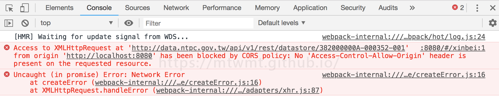
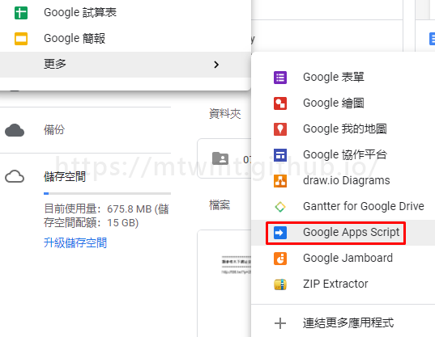
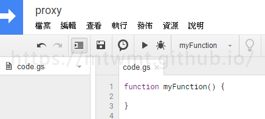
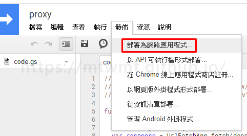
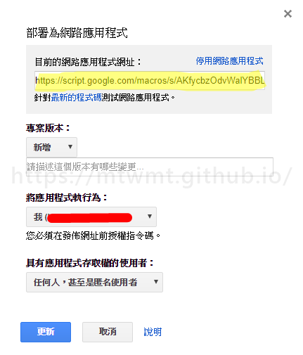

利用 google apps script 做中繼點跨網域遠端取得api資料
最近在練習 vue 時 會去政府公開 api 取資料 但有些 api 會有跨網域讀取限的問題
一開始在開發環境vue-cli有提供http-proxy-middleware做 proxy 處理跟網域這部份
但到了要發佈的時後 資料出現一樣會出現異常啊啊啊啊 像這樣

沒有主機 沒有後端資源的我們該怎麼辦呢 (抱頭)
這時後 估狗好朋友出現了 它提供了google app script
首先 要先有一個 google 帳號 開啟雲端硬碟服務
新增 google apps script

如果沒有 可以到
連結更多應用程式裡去找
接下來就是開新專案

將程式碼修改如下
1 | function doGet(e){ |


黃色區塊則為部署網址
新增專案版本 這裡要注意一下 修改後 如果沒有新增專案版本 發佈後的程式還會是前一版的哦
接下來 按 確定或更新 就能直接套用囉
1 | 部署的網址?參數名稱=api網址 |
以新北市 ubike API 為例
1 | 部署的網址?url=data.ntpc.gov.tw/api/v1/rest/datastore/382000000A-000352-001 |
成功！！
函式使用上 請參考文件規則 https://developers.google.com/apps-script/guides/html/
Donate
如果這整篇文章有幫助到你的話 也歡迎請我喝杯飲料 ^_^